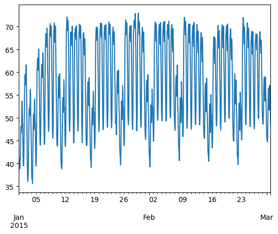
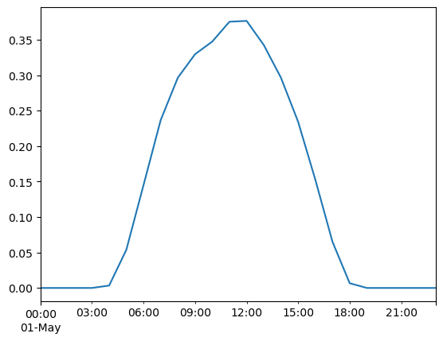
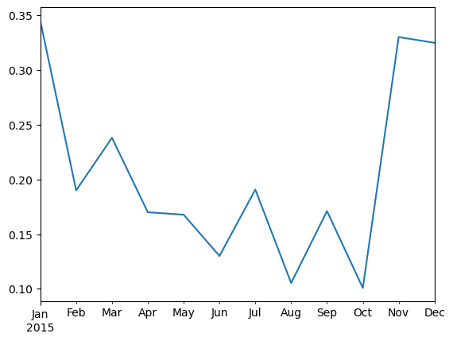

Background: Tabular data analysis with pandas#
Copyright (c) 2025, Iegor Riepin
Note
If you have not yet set up Python on your computer, you can execute this tutorial in your browser via Google Colab. Click on the rocket in the top right corner and launch “Colab”. If that doesn’t work download the .ipynb file and import it in Google Colab.
Then install pandas and numpy by executing the following command in a Jupyter cell at the top of the notebook.
!pip install -q pandas numpy
Pandas is a an open source library providing tabular data structures and data analysis tools.In other words, if you can imagine the data in an Excel spreadsheet, then Pandas is the tool for the job.

Note
Documentation for this package is available at https://pandas.pydata.org/docs/.
Package Imports#
This will be our first experience with importing a package.
Usually we import pandas with the alias pd.
We might also need numpy, Python’s main library for numerical computations.
import pandas as pd
import numpy as np
Series#
A Series represents a one-dimensional array of data. It is similar to a dictionary consisting of an index and values, but has more functions.
Note
Example data on Germany’s final six nuclear power plants is from Wikipedia.
names = ["Neckarwestheim", "Isar 2", "Emsland"]
values = [1269, 1365, 1290]
s = pd.Series(values, index=names)
s
Neckarwestheim 1269
Isar 2 1365
Emsland 1290
dtype: int64
dictionary = {
"Neckarwestheim": 1269,
"Isar 2": 1365,
"Emsland": 1290,
}
s = pd.Series(dictionary)
s
Neckarwestheim 1269
Isar 2 1365
Emsland 1290
dtype: int64
Arithmetic operations can be applied to the whole pd.Series.
s**0.5
Neckarwestheim 35.623026
Isar 2 36.945906
Emsland 35.916570
dtype: float64
We can access the underlying index object if we need to:
s.index
Index(['Neckarwestheim', 'Isar 2', 'Emsland'], dtype='object')
We can get values back out using the index via the .loc attribute
s.loc["Isar 2"]
np.int64(1365)
Or by raw position using .iloc
s.iloc[2]
np.int64(1290)
We can pass a list or array to loc to get multiple rows back:
s.loc[["Neckarwestheim", "Emsland"]]
Neckarwestheim 1269
Emsland 1290
dtype: int64
DataFrame#
Series are limited to a single column. A more useful Pandas data structure is the DataFrame. A DataFrame is basically a bunch of series that share the same index.
data = {
"capacity": [1269, 1365, 1290], # MW
"type": ["PWR", "PWR", "PWR"],
"start_year": [1989, 1988, 1988],
"end_year": [np.nan, np.nan, np.nan],
}
df = pd.DataFrame(data, index=["Neckarwestheim", "Isar 2", "Emsland"])
df
| capacity | type | start_year | end_year | |
|---|---|---|---|---|
| Neckarwestheim | 1269 | PWR | 1989 | NaN |
| Isar 2 | 1365 | PWR | 1988 | NaN |
| Emsland | 1290 | PWR | 1988 | NaN |
A wide range of statistical functions are available on both Series and DataFrames.
df.min()
capacity 1269
type PWR
start_year 1988
end_year NaN
dtype: object
df.mean(numeric_only=True)
capacity 1308.000000
start_year 1988.333333
end_year NaN
dtype: float64
We can get a single column as a Series using python’s getitem syntax on the DataFrame object.
df["capacity"]
Neckarwestheim 1269
Isar 2 1365
Emsland 1290
Name: capacity, dtype: int64
Indexing works very similar to series
df.loc["Emsland"]
capacity 1290
type PWR
start_year 1988
end_year NaN
Name: Emsland, dtype: object
But we can also specify the column(s) and row(s) we want to access
df.at["Emsland", "start_year"]
np.int64(1988)
We can also add new columns to the DataFrame:
df["reduced_capacity"] = df.capacity * 0.8
df
| capacity | type | start_year | end_year | reduced_capacity | |
|---|---|---|---|---|---|
| Neckarwestheim | 1269 | PWR | 1989 | NaN | 1015.2 |
| Isar 2 | 1365 | PWR | 1988 | NaN | 1092.0 |
| Emsland | 1290 | PWR | 1988 | NaN | 1032.0 |
We can also remove columns or rows from a DataFrame:
Note
This operation needs to be an inplace operation to be permanent.
df.drop("reduced_capacity", axis="columns", inplace=True)
We can also drop columns with only NaN values
df.dropna(axis=1)
| capacity | type | start_year | |
|---|---|---|---|
| Neckarwestheim | 1269 | PWR | 1989 |
| Isar 2 | 1365 | PWR | 1988 |
| Emsland | 1290 | PWR | 1988 |
Or fill it up with default “fallback” data:
df.fillna(2023)
| capacity | type | start_year | end_year | |
|---|---|---|---|---|
| Neckarwestheim | 1269 | PWR | 1989 | 2023.0 |
| Isar 2 | 1365 | PWR | 1988 | 2023.0 |
| Emsland | 1290 | PWR | 1988 | 2023.0 |
Sorting Data#
We can also sort the entries in dataframes, e.g. alphabetically by index or numerically by column values
df.sort_index()
| capacity | type | start_year | end_year | |
|---|---|---|---|---|
| Emsland | 1290 | PWR | 1988 | NaN |
| Isar 2 | 1365 | PWR | 1988 | NaN |
| Neckarwestheim | 1269 | PWR | 1989 | NaN |
df.sort_values(by="capacity", ascending=False)
| capacity | type | start_year | end_year | |
|---|---|---|---|---|
| Isar 2 | 1365 | PWR | 1988 | NaN |
| Emsland | 1290 | PWR | 1988 | NaN |
| Neckarwestheim | 1269 | PWR | 1989 | NaN |
Filtering Data#
We can also filter a DataFrame using a boolean series obtained from a condition. This is very useful to build subsets of the DataFrame.
df.capacity > 1300
Neckarwestheim False
Isar 2 True
Emsland False
Name: capacity, dtype: bool
df[df.capacity > 1300]
| capacity | type | start_year | end_year | |
|---|---|---|---|---|
| Isar 2 | 1365 | PWR | 1988 | NaN |
We can also combine multiple conditions, but we need to wrap the conditions with brackets!
df[(df.capacity > 1300) & (df.start_year >= 1988)]
| capacity | type | start_year | end_year | |
|---|---|---|---|---|
| Isar 2 | 1365 | PWR | 1988 | NaN |
Or we make SQL-like queries:
df.query("start_year == 1988")
| capacity | type | start_year | end_year | |
|---|---|---|---|---|
| Isar 2 | 1365 | PWR | 1988 | NaN |
| Emsland | 1290 | PWR | 1988 | NaN |
threshold = 1300
df.query("start_year == 1988 and capacity > @threshold")
| capacity | type | start_year | end_year | |
|---|---|---|---|---|
| Isar 2 | 1365 | PWR | 1988 | NaN |
Modifying Values#
In many cases, we want to modify values in a dataframe based on some rule. To modify values, we need to use .loc or .iloc
df.loc["Isar 2", "capacity"] = 1366
df
| capacity | type | start_year | end_year | |
|---|---|---|---|---|
| Neckarwestheim | 1269 | PWR | 1989 | NaN |
| Isar 2 | 1366 | PWR | 1988 | NaN |
| Emsland | 1290 | PWR | 1988 | NaN |
Sometimes it can be useful to rename columns:
df.rename(columns=dict(type="reactor"))
| capacity | reactor | start_year | end_year | |
|---|---|---|---|---|
| Neckarwestheim | 1269 | PWR | 1989 | NaN |
| Isar 2 | 1366 | PWR | 1988 | NaN |
| Emsland | 1290 | PWR | 1988 | NaN |
Sometimes it can be useful to replace values:
df.replace({"PWR": "Pressurized water reactor"})
| capacity | type | start_year | end_year | |
|---|---|---|---|---|
| Neckarwestheim | 1269 | Pressurized water reactor | 1989 | NaN |
| Isar 2 | 1366 | Pressurized water reactor | 1988 | NaN |
| Emsland | 1290 | Pressurized water reactor | 1988 | NaN |
Time Series#
Time indexes are great when handling time-dependent data.
Let’s first read some time series data, using the pd.read_csv() function, which takes a local file path ora link to an online resource.
The example data hourly time series for Germany in 2015 for:
electricity demand from OPSD in GW
onshore wind capacity factors from renewables.ninja in per-unit of installed capacity
offshore wind capacity factors from renewables.ninja in per-unit of installed capacity
solar PV capacity factors from renewables.ninja in per-unit of installed capacity
electricity day-ahead spot market prices in €/MWh from EPEX Spot zone DE/AT/LU retrieved via SMARD platform
url = (
"https://tubcloud.tu-berlin.de/s/pKttFadrbTKSJKF/download/time-series-lecture-2.csv"
)
ts = pd.read_csv(url, index_col=0, parse_dates=True)
ts.head()
| load | onwind | offwind | solar | prices | |
|---|---|---|---|---|---|
| 2015-01-01 00:00:00 | 41.151 | 0.1566 | 0.7030 | 0.0 | NaN |
| 2015-01-01 01:00:00 | 40.135 | 0.1659 | 0.6875 | 0.0 | NaN |
| 2015-01-01 02:00:00 | 39.106 | 0.1746 | 0.6535 | 0.0 | NaN |
| 2015-01-01 03:00:00 | 38.765 | 0.1745 | 0.6803 | 0.0 | NaN |
| 2015-01-01 04:00:00 | 38.941 | 0.1826 | 0.7272 | 0.0 | NaN |
We can use Python’s slicing notation inside .loc to select a date range, and then use the built-in plotting feature of Pandas:
ts.loc["2015-01-01":"2015-03-01", "load"].plot()
<Axes: >

ts.loc["2015-05-01", "solar"].plot()
<Axes: >

A common operation is to change the resolution of a dataset by resampling in time, which Pandas exposes through the resample function.
Note
The resample periods are specified using pandas offset index syntax.
ts["onwind"].resample("ME").mean().plot()
<Axes: >

Groupby Functionality#
DataFrame objects have a groupby method. The simplest way to think about it is that you pass another series, whose values are used to split the original object into different groups.
Here’s an example which retrieves the total generation capacity per country:
fn = "https://raw.githubusercontent.com/PyPSA/powerplantmatching/master/powerplants.csv"
df = pd.read_csv(fn, index_col=0)
df.iloc[:5, :10]
| Name | Fueltype | Technology | Set | Country | Capacity | Efficiency | DateIn | DateRetrofit | DateOut | |
|---|---|---|---|---|---|---|---|---|---|---|
| id | ||||||||||
| 0 | Pumpspeicherkraftwerk Erzhausen | Hydro | Pumped Storage | Storage | Germany | 200.0 | 0.75 | 1964.0 | 1998.0 | NaN |
| 1 | La Plate Taille | Hydro | Pumped Storage | Store | Belgium | 144.0 | NaN | 1970.0 | NaN | NaN |
| 2 | Illwerke Vkw Rodundwerk | Hydro | Reservoir | Store | Austria | 495.0 | 0.75 | 1943.0 | 2011.0 | NaN |
| 3 | Bissorte | Hydro | Pumped Storage | Store | France | 818.0 | NaN | 1936.0 | NaN | NaN |
| 4 | Obervermuntwerk Maschine Turbine | Hydro | Pumped Storage | Storage | Austria | 380.0 | 0.75 | 1943.0 | 2018.0 | NaN |
grouped = df.groupby("Country").Capacity.sum()
grouped.head()
Country
Albania 2683.566000
Austria 27057.130368
Belgium 24244.510150
Bosnia and Herzegovina 5478.500000
Bulgaria 21015.140000
Name: Capacity, dtype: float64
Let’s break apart this operation a bit. The workflow with groupby can be divided into three general steps:
Split: Partition the data into different groups based on some criterion.
Apply: Do some calculation within each group, e.g. minimum, maximum, sums.
Combine: Put the results back together into a single object.

Grouping is not only possible on a single columns, but also on multiple columns. For instance,
we might want to group the capacities by country and fuel type. To achieve this, we pass a list of functions to the groupby functions.
capacities = df.groupby(["Country", "Fueltype"]).Capacity.sum()
capacities
Country Fueltype
Albania Hydro 2079.366
Solar 454.200
Wind 150.000
Austria Battery 40.320
Hard Coal 1471.000
...
United Kingdom Other 35.000
Solar 13679.900
Solid Biomass 4154.200
Waste 1948.150
Wind 39284.500
Name: Capacity, Length: 327, dtype: float64
By grouping by multiple attributes, our index becomes a pd.MultiIndex (a hierarchical index with multiple levels.
capacities.index[:5]
MultiIndex([('Albania', 'Hydro'),
('Albania', 'Solar'),
('Albania', 'Wind'),
('Austria', 'Battery'),
('Austria', 'Hard Coal')],
names=['Country', 'Fueltype'])
We can use the .unstack function to reshape the multi-indexed pd.Series into a pd.DataFrame which has the second index level as columns.
capacities.unstack().tail().T
| Country | Spain | Sweden | Switzerland | Ukraine | United Kingdom |
|---|---|---|---|---|---|
| Fueltype | |||||
| Battery | 118.9500 | 543.460000 | 68.000 | 1.0 | 6242.41 |
| Biogas | NaN | NaN | 11.000 | NaN | 66.50 |
| Geothermal | NaN | NaN | NaN | NaN | 2.00 |
| Hard Coal | 11204.6000 | 291.000000 | NaN | 23628.0 | 35856.60 |
| Heat Storage | 1049.5000 | NaN | NaN | NaN | NaN |
| Hydro | 17794.3648 | 14950.962323 | 18083.096 | 6590.2 | 4769.65 |
| Hydrogen Storage | 2.9500 | NaN | 0.000 | NaN | 2.23 |
| Lignite | 2729.0000 | NaN | NaN | NaN | NaN |
| Mechanical Storage | NaN | NaN | 1.000 | NaN | 5.00 |
| Natural Gas | 27830.4000 | 790.000000 | 98.800 | 3539.1 | 38353.60 |
| Nuclear | 8524.0000 | 11452.000000 | 3492.000 | 17635.0 | 19137.00 |
| Oil | 1083.6000 | 3109.000000 | NaN | NaN | 668.50 |
| Other | NaN | NaN | NaN | NaN | 35.00 |
| Solar | 43737.5000 | 682.100000 | 96.700 | 5687.7 | 13679.90 |
| Solid Biomass | 611.1000 | 3185.600000 | 76.000 | NaN | 4154.20 |
| Waste | 230.2500 | 452.100000 | 212.500 | NaN | 1948.15 |
| Wind | 32492.9000 | 17741.800000 | 55.000 | 566.7 | 39284.50 |
Exercises#
Task 1: Provide a list of unique fuel types included in the power plants dataset.
Task 2: Filter the dataset by power plants with the fuel type “Hard Coal”. How many hard coal power plants are there?
Task 3: Identify the three largest coal power plants. In which countries are they located? When were they built?
Task 4: What is the average “DateIn” of each “Fueltype”? Which type of power plants is the oldest on average?
Task 5: In the time series provided, calculate the annual average capacity factors of wind and solar.
Task 6: In the time series provided, calculate and plot the monthly average electricity price.